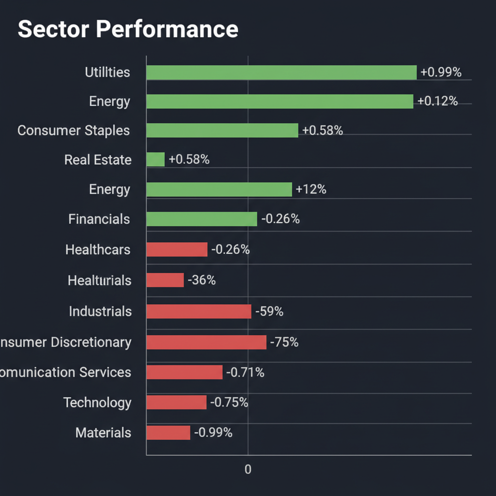
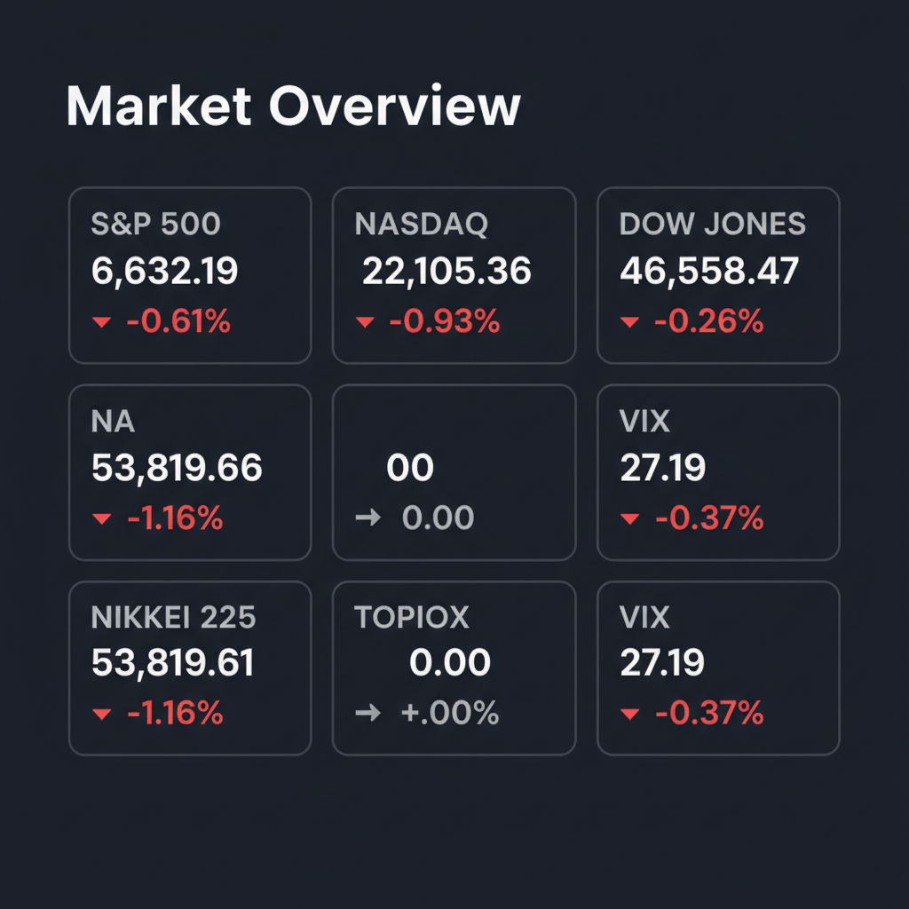

Daily Investment Report - 2026-03-14
Generated: 2026/3/14 8:13:20


本日の投資チームミーティングにおける各エージェントの分析とディスカッションを踏まえ、投資家向けの最終レポートをお届けします。
現在の市場は、強気な見通しと極端な警戒感が激しく交錯する重要な転換点にあります。本レポートでは、市場のノイズを排し、今すぐ取るべき具体的なアクションをまとめました。
1. エグゼクティブサマリー
- VIX（恐怖指数）が27台へ急騰しており、市場はAI主導の楽観的な強気相場から、ディフェンシブ・バリュー株への資金逃避（リスクオフ）へと明確に移行し始めています。
- 米国の「高金利の長期化」と日銀の「政策転換（利上げ・円高反転リスク）」を背景に、バリュエーションが極度に過熱した大型ハイテク株への一極集中リスクは限界に達しています。
- 現在はキャッシュ比率を高めて下値の暴落リスクに備えつつ、AI電力需要や円安の恩恵を直接受ける「財務強固で割安な中小型株」へ資金をシフトさせる防御的かつ選別的なバーベル戦略が有効です。
2. 注目銘柄リスト
強気（買い推奨）
- Powell Industries (POWL) [約18億ドル]: AIデータセンター増設に伴う電力インフラ・配電盤需要を直接享受しつつ、実質無借金かつ低PER（10倍台後半）で下値リスクが極めて限定的であるため。
- スター精密 (7718) [約650億円]: 保守的な為替前提（1ドル=140円）による業績の上振れ確度が高く、PBR1倍割れの割安さと総還元性向50%以上の強力な株主還元姿勢を持つ典型的なバリュー株であるため。
中立（様子見）
- QPS研究所 (5595) [約650億円]: 小型SAR衛星による防衛国策テーマとして時価総額数千億円クラスへの飛躍のポテンシャルは高いものの、PER100倍超のバリュエーションは現在の高VIX環境下ではボラティリティが高すぎるため。
- Rocket Lab USA (RKLB) [約21億ドル]: SpaceXの対抗馬として宇宙インフラ市場で圧倒的な成長が期待できるものの、恒常的なフリーキャッシュフロー赤字であり、高金利下での資金調達リスクが懸念されるため。
弱気（警戒）
- SoundHound AI (SOUN) [約16億ドル]: AI音声認識分野での破壊的イノベーションの魅力はあるものの、利益を伴わない新興グロース株は高金利環境下でのインタレスト・カバレッジ・レシオ（債務返済能力）の低下懸念が強く、真っ先に資金流出の対象となるため。
3. セクター推奨ランキング
1.
公益・電力インフラ: AIデータセンターの爆発的な電力需要という成長テーマを持ちながら、現在のボラティリティ相場で最強のディフェンシブ性を発揮するため。
2.
金融・銀行（日米）: 日銀の追加利上げ観測や米国の高金利長期化により、預貸利ざや（NIM）の劇的な改善と強力な自社株買いが期待できるため。
3.
エネルギー: 中東情勢の地政学リスクに対するヘッジとして機能し、高水準のフリーキャッシュフローを背景にした株主還元が強力な下支えとなるため。
4.
ヘルスケア: 景気減速リスクに対する防御力と、肥満症治療薬（GLP-1）という数兆円規模の独立した成長メガトレンドを併せ持つため。
5.
一般消費財: インフレの粘着性と高金利による実質賃金の低下が、個人消費を直接的に冷え込ませるマクロの逆風に晒されているため。
6.
テクノロジー・半導体: バリュエーションが歴史的な過熱圏にあり、インフレ再燃による金利上昇（マルチプル・コンプレッション）やAI投資のROI鈍化が発覚した際の暴落リスクが最も高いため。
4. 今週の注目イベント
- 米国PCEデフレーターおよび消費者物価指数（CPI）の発表（インフレの粘着性とFRBの利下げ開始時期を見極めるため）
- 日銀金融政策決定会合と総裁会見（国債買入れ減額の具体策および秋の追加利上げに向けたタカ派スタンスを確認するため）
- 米国主要ハイテク企業およびAI関連銘柄の決算発表（巨額のAIインフラ投資が実際の利益・ROIに結びついているかを確認するため）
- 中東情勢および米中関税に関する政府当局の動向（地政学リスクによる原油価格の変動とサプライチェーンへの影響を監視するため）
5. リスク要因
- スタグフレーションとAIバブル崩壊の同時発生: 原油高等によるインフレ再燃でFRBが利下げを見送る中、巨大IT企業のAIマネタイズ遅れが発覚し、株価と景気が同時にクラッシュする最悪のシナリオ。
- 日銀のタカ派サプライズと円キャリーの巻き戻し: 想定以上のペースでの追加利上げにより、1ドル=140円を割る急激な円高が進行し、輸出関連を中心とした日本株の業績前提とバリュエーションが根本から崩壊するリスク。
- VIX高止まりによるフラッシュクラッシュ: 恐怖指数が27を超える異常値の中、S&P500やNASDAQが主要なサポートライン（50日移動平均線など）を割り込んだ際、アルゴリズムによる機械的な売りが殺到し5〜10%の深い調整に発展するリスク。
- バリュートラップ（割安の罠）への転落: 表面的には低PER・低PBRであっても、インフレによるコスト増を価格転嫁できない内需企業の中小型株が、利益率の急悪化に見舞われるリスク。
6. アクションアイテム
- キャッシュ比率の引き上げ: VIX高止まりの異常事態に備え、ポートフォリオ内の現金比率をただちに30〜40%へ引き上げ、相場急落時の「押し目買いの弾薬」を確保する。
- 過熱したグロース株の利益確定: バリュエーションが極度に高い大型ハイテク株、半導体株、および赤字の新興グロース株は一旦利益確定（または損切り）し、エクスポージャーをニュートラル以下に落とす。
- ディフェンシブ・バリューへの資金シフト: 確保した資金の一部を、AI特需の恩恵を受けつつ実質無借金の中小型電力インフラ株（POWL等）や、金利上昇の恩恵を受ける日本の優良バリュー株（地方銀行、スター精密等）へ振り向ける。
- テールリスクヘッジとストップロスの徹底: 全ての既存買いポジションに対し、直近サポートラインの1〜2%下に厳格な逆指値（ストップロス）を設定する。または、S&P500のプットオプションを購入し、暴落に対する保険をかける。新規の順張りエントリーは完全に控える。